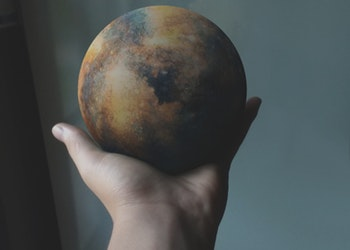

-
March-May: Apollo 9 and Apollo 10 test lunar module and orbit the moon, setting the stage for the first landing.
July 20: Apollo 11 makes first lunar landing. Astronauts Neil Armstrong and Buzz Aldrin walk on the moon, with Michael Collins orbiting overhead
November 14-24: Apollo 12 (Conrad, Gordon, Bean) makes second lunar landing.
Read more -
April 11-17: Apollo 13 astronauts Jim Lovell, Fred Haise and Jack Swigert use lunar module as "lifeboat" after explosion forces them to abort lunar landing and return to Earth. Recovery of crew becomes one of NASA's finest hours, known as a "successful failure".
Read more -
January 31-February 9: Apollo 14(Shepard, Mitchell, Roosa) lands in moon's fra Mauro Highlands.
July 26-August 7: Apollo 15(Scott, Irwin, Worden) lands in moon's Hadley-Apennine region. First mission to feature lunar rover.
November 13: Mariner 9 becomes first spacecraft to orbit another planet (Mars).
Read more -

April 16-27: Apollo 16 (Young, Druke, Mattingly) lands in lunar Descartes Highlands.
July 23: Landsat 1 launched to perform Earth mapping mission.
December 7-19: Apollo 17 (Cernan, Schmitt, Evans) lands in Taurus-Littrow region of moon on last Apollo mission. Plaque left behind reads "we came in peace for all mankind."
Read more -
May 25-June 22: The first of three astronaut crews lives about Americas first space station, skylab. Other crews follow in July and November.
December 3: Pioneer 10 makes the first flyby of Jupiter.
Read more -
February 5: Mariner 10 flies by Venus.
September 1: Pioneer 11 begins Jupiter encounter, sends back first polar images.
September 2: Mariner 10 flies by Mercury.
Read more -
July 15-24: Apollo-Soyuz Test Project marks first U.S.-Soviet docking in space.
August 5: X-24B Lifting body test demonstrates shuttle-like vehicle can land safely after orbit.
Read more -
July 20: Viking 1 lands on Mars -- first spacecraft to land on Mars.
September 3: Viking 2 lands on Mars
Read more -
February 18: Space shuttle enterprise makes first flight tests aboard boeing 747. First free flight follows in August, and final test follows in October, with astronauts Fred Haise and Gordon Fullerton aboard.
August 20: Voyager 2 lifts off to begin "Grand Tour" of solar system. Voyager 1 follows on September 5.
Read more -

July 11: Skylab re-enters Earth's atmosphere, debris falls from southeastern Indian Ocean to sprasely populated area of Western Australia.
September 1: Pioneer 11 flies by Saturn.
Read more -
April 4: First launch of shuttle challenger on STS-6.
June 18-24: Sally Ride becomes first American women in space on STS-7(challenger).
August 30-September 5:Guy Bluford becomes first African-American in space on STS-8(challenger).
Read more -
May 4: Magellan mission to Venus begins following launch from Atlantis on mission STS-30.
October 18: Galileo Spacecraft launches from Atlantis on STS-34 mission.
Read more -
May 2-16: First flight of shuttle Endeavour on STS-49, includes the first three-person spacewalk.
Read more -
February 3-11: STS-63 - Shuttle Discovery performs flyby of Russian space station.
November 11-November 20: STS-74 - Atlantis attaches Russian-Built docking port to Mir for use in future shuttle dockings.
December 7: Galileo probe release into jupiter's atmosphere.
Read more -
February 7-20: STS-98 - Atlantis delivers U.S. Destiny lab to International space station.
March 8-21: STS-102 - Discovery retrieves Expedition one crew and delivers Expedition two.
Read more -
January 2: Stardust flies through comet Wild 2 dust cloud on sample-return mission.
January 3, January 24: Mars rover spirit and Opportunity land on the Red Planet. They outlive by far their planned 90-day mission profile.
November 16: X-43A experimental "scramjet" sets new speed record for jet aircraft -- Mach 9.6 or nearly 7.000 miles an hour.
Read more -
May 25: Phoenix Lander arrives at Mars.
November 13: Hubble takes first visible-light snapshot of a planet circling another star.
November 20: International space station celebrates tenth anniversary of construction. Four shuttle missions(STS-122, STS-123, etc.) add elements to outpost.
Read more -
February 14: Stardust-NExt flies by comet Tempel 1.
February 24-March 9: Shuttle Discovery makes final flight, delivering logistics module to International Space Station.
March 17: MESSENGER goes into Orbit around Mercury.
Read more